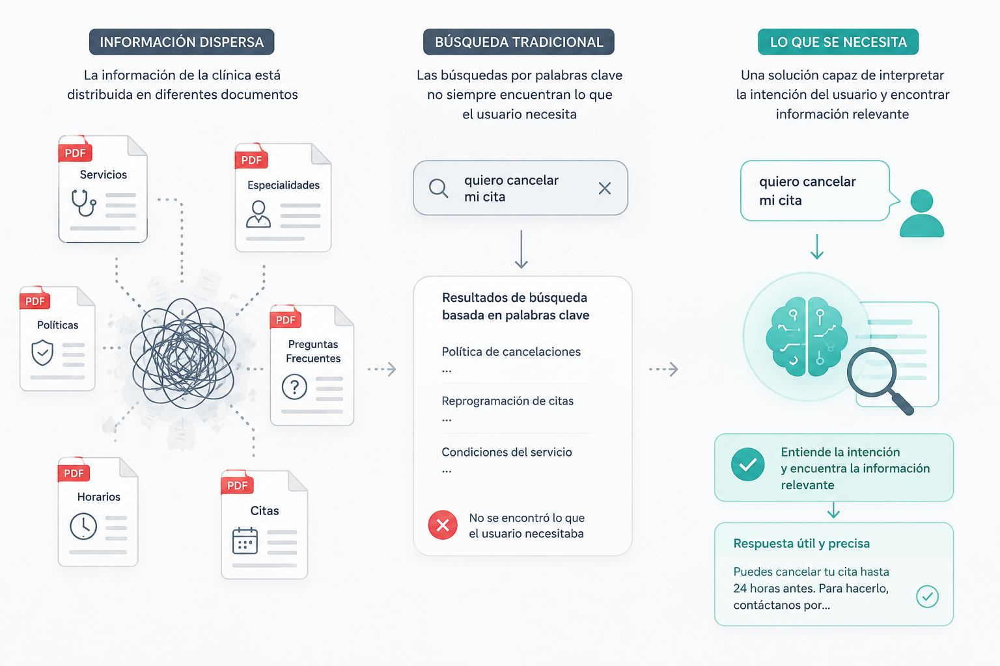
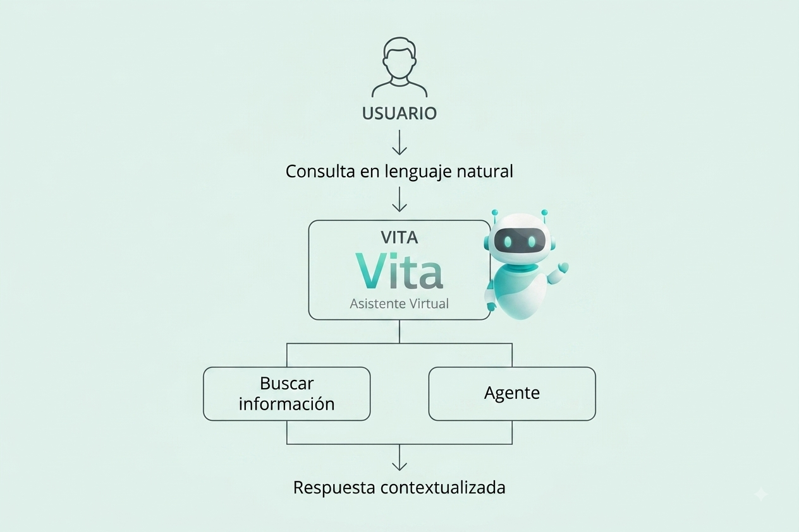
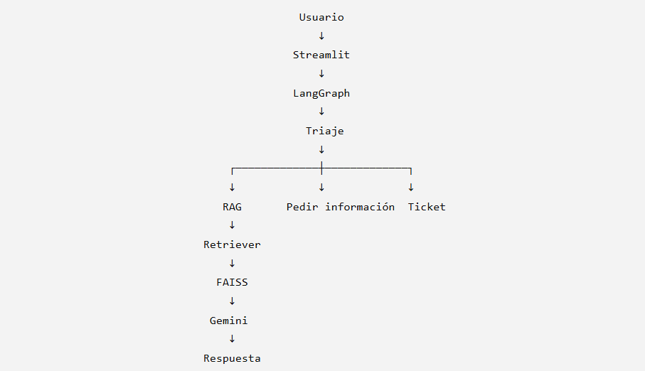
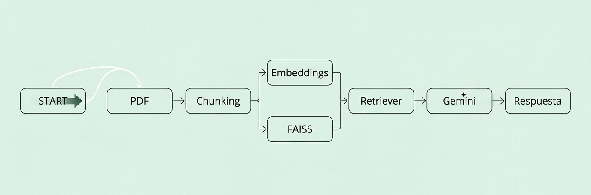
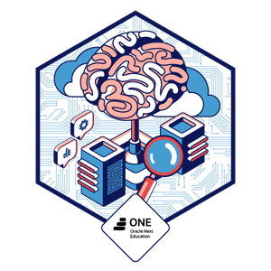
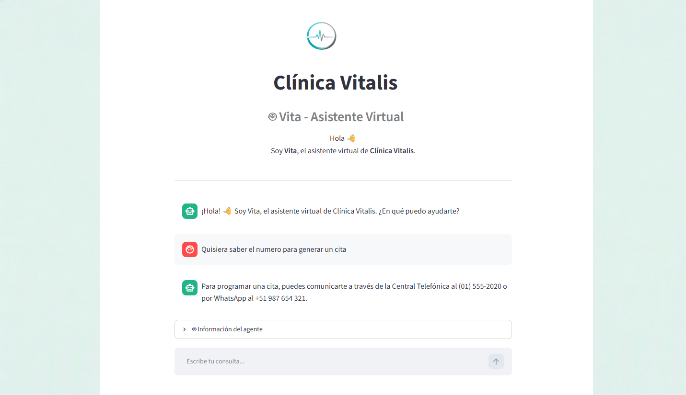

INTRODUCCIÓN
Vita AI Assistant es un asistente inteligente desarrollado para una clínica ficticia llamada Clínica Vitalis. El sistema permite a los usuarios realizar consultas en lenguaje natural sobre servicios, especialidades médicas, citas, políticas y otra información institucional.
El proyecto combina una arquitectura Retrieval-Augmented Generation (RAG) con LangGraph para recuperar información relevante desde documentos PDF y gestionar el flujo de atención de cada consulta. Las respuestas son generadas utilizando Google Gemini.
EL PROBLEMA
En un entorno de atención al paciente, acceder rápidamente a información confiable es fundamental para brindar una respuesta adecuada. Sin embargo, cuando el conocimiento se encuentra repartido entre distintos documentos, el proceso depende de que el usuario sepa dónde buscar y cómo formular exactamente su consulta.
Esta situación puede generar respuestas incompletas, mayor tiempo de búsqueda y una experiencia poco eficiente para quien necesita información de la clínica.

LA SOLUCIÓN
Se desarrolló Vita, un asistente basado en RAG que procesa la documentación institucional y utiliza búsqueda semántica para recuperar información relevante antes de generar una respuesta.
Además, LangGraph permite gestionar el flujo de atención mediante diferentes caminos según el tipo de consulta, incluyendo resolución automática, solicitud de información adicional y apertura de tickets.

ARQUITECTURA
La arquitectura integra la interfaz de usuario, el agente de LangGraph y el sistema RAG para procesar las consultas y generar respuestas basadas en la documentación de la clínica.
El flujo comienza con la consulta del usuario. LangGraph realiza el triaje y determina el proceso que debe seguir, conectando con el pipeline correspondiente para resolver o derivar la solicitud.

PIPELINES
El pipeline RAG permite que Vita consulte información específica de la clínica antes de generar una respuesta. Los documentos PDF son procesados y divididos en fragmentos, que posteriormente son transformados en embeddings y almacenados en FAISS.
Cuando el usuario realiza una consulta, se ejecuta una búsqueda semántica para recuperar los fragmentos más relevantes. Estos se utilizan como contexto para que Google Gemini genere una respuesta basada en la documentación disponible.

PIPELINE DEL AGENTE
El flujo del agente es gestionado mediante LangGraph. A partir del triaje, la consulta puede dirigirse hacia diferentes procesos según su naturaleza.
- 01. Triaje: clasifica la solicitud.
- 02. Auto-resolución: utiliza RAG para responder.
- 03. Pedir información: solicita datos adicionales.
- 04. Abrir ticket: deriva solicitudes que requieren atención adicional.
Technology Stack
CHALLENGE FINAL
Vita AI Assistant fue desarrollado como solución al Challenge Final del curso de Agentes IA de Alura, donde se aplicaron conceptos de inteligencia artificial generativa, RAG, embeddings, búsqueda semántica y agentes con LangGraph en un proyecto práctico.

RESULTADOS
Se obtuvo un asistente capaz de interpretar consultas en lenguaje natural, recuperar información relevante desde la documentación de la clínica y generar respuestas contextualizadas.
La combinación de RAG y LangGraph permitió integrar recuperación de información con un flujo de decisión capaz de adaptar la atención según el tipo de solicitud.

A modular architecture combining retrieval, semantic search and agent orchestration.